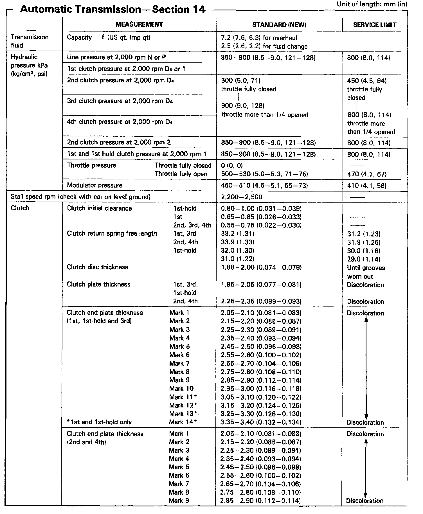
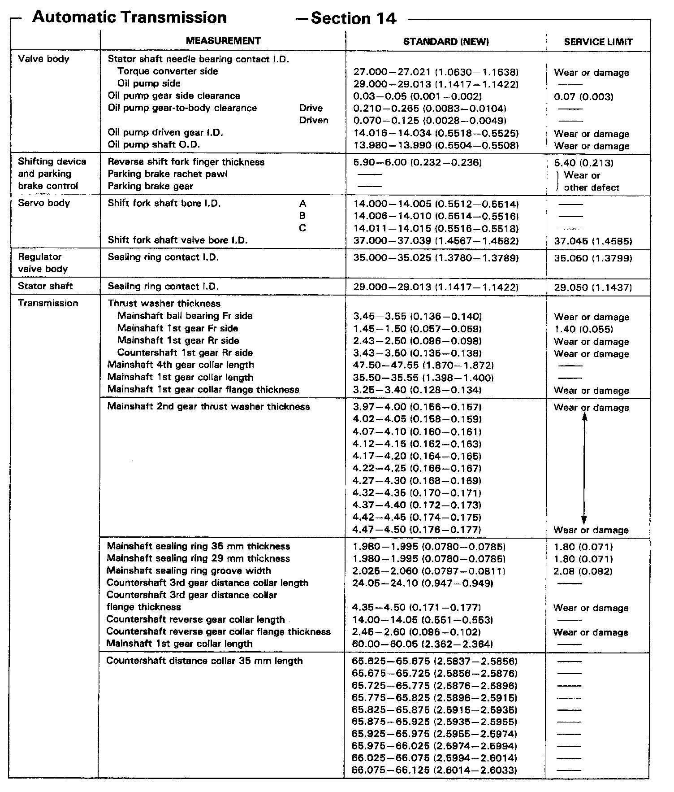
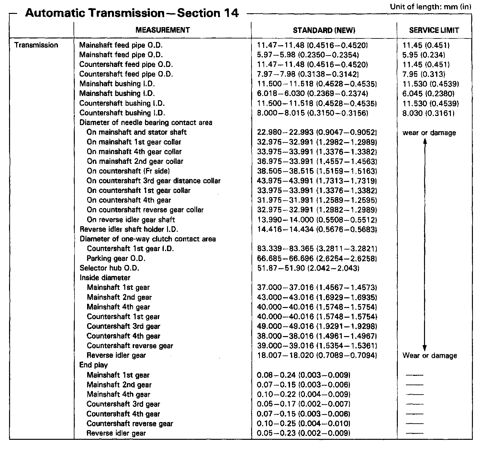
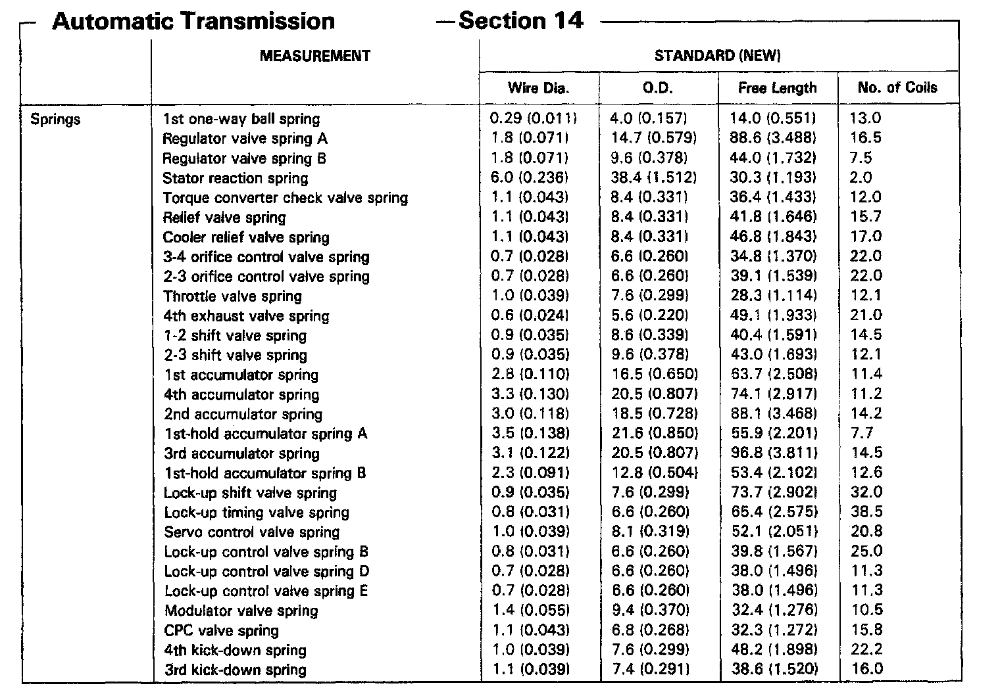

A/T Technical Data
MPWA 4-spd A/T, Line Pressure, Stall Speed & Clutch:

MPWA 4-spd A/T, Valve Body & Servo Body Transmission Thickness:

MPWA 4-spd A/T, Mainshaft & Countershaft Endplay:

MPRA 4-spd A/T, Transmission Spring Measurements:

Manual/Automatic Transmission Gear Ratios: